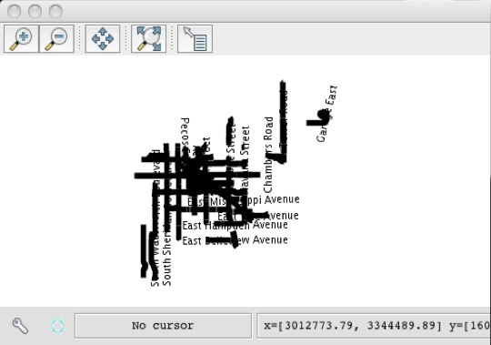
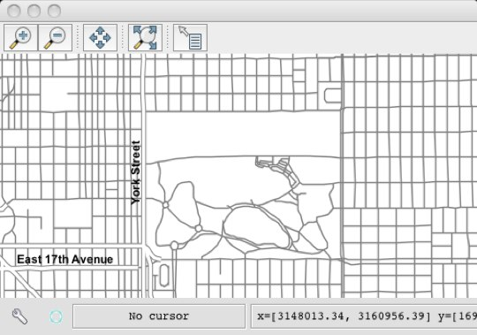

Styling and Rendering¶
code chooser
This tutorial introduces the modules used for styling and rendering, covering the following topics:
Basic styling with symbolizers
Labelling
Thematic styling
Scale dependent rendering
Prerequisites¶
The Layers and Workspaces tutorial must be completed before proceeding as the data set up there will be used as the base of this tutorial.
Download smiley.png and save it in the working directory.
Symbolizers¶
A Symbolizer object describes a component of a style. Types of symbolizers include fill, stroke, shape, labels, etc…
A style is built by composing different symbolizers together.
>>> from geoscript.style import *
>>> from geoscript.render import *
>>> from geoscript.geom import *
>>> from geoscript.feature import *
>>> style = Stroke('black', width=2) + Fill('#ff0000', opacity=0.75)
>>> draw(Point(0,0).buffer(1), style)
>>> mpoint = readWKT('MULTIPOINT ((10 40), (40 30), (20 20), (30 10))')
>>> draw(mpoint, Shape('red', type='triangle', size=20))
>>> draw()
>>> feature = Feature({'geom':Point(0,0), 'name': 'Happy'})
>>> draw(feature, Icon('smiley.png') + Label('name', '20pt').point(anchor=(-0.25,0.5)))
js> var {Stroke, Fill, Shape, Icon} = require("geoscript/style");
js> var style = Stroke({brush: "black", width: 2}).and(Fill({brush: "#ff0000", opacity: 0.75}))
js> style
<Style parts: <Stroke width: 2, opacity: 1, brush: <Color value: '#...>
js> var shape = Shape({name: "triangle", size: 20})
js> shape
<Shape name: 'triangle', size: 20>
js> var icon = Icon("smiley.png");
groovy:000> import geoscript.style.*
groovy:000> import static geoscript.render.Draw.draw
groovy:000> import geoscript.geom.*
groovy:000> import geoscript.feature.*
groovy:000> style = new Stroke("black",2) + new Fill("#ff0000",0.75)
groovy:000> draw(new Point(0,0).buffer(1), style: style)
groovy:000> mpoint = Geometry.fromWKT("MULTIPOINT ((10 40), (40 30), (20 20), (30 10))")
groovy:000> draw(mpoint, style: new Shape("red",20,"triangle"))
groovy:000> feature = new Feature(["geom": new Point(0,0), "name": "Happy"],"happy1")
groovy:000> draw(feature, style: new Icon(url: "smileyface.png", size: 12) + new Label("name").font(size:20).point(anchor:[-0.25,0.5]))
See also
See also
Thematic Styling¶
Often styling rules are created based on values for attributes in a dataset. Using the highway layer as an example determine the space of values for the “TYPE” attribute.
>>> from geoscript.workspace import PostGIS
>>> db = PostGIS('denver')
>>> hwy = db['highway']
>>> hwy.schema
highway [the_geom: MultiLineString, TYPE: str, NAME: str, ONEWAY: str, LANES: long]
>>> set([f['TYPE'] for f in hwy.features()])
set([u'road', u'bridleway', u'service', u'trunk', u'primary_link', u'unclassified', u'motorway', u'path', u'tertiary_link', u'secondary', u'steps', u'secondary_link', u'trunk_link', u'pedestrian', u'footway', u'residential', u'primary', u'tertiary', u'motorway_link', u'track', u'crossing', u'cycleway'])
js> var PostGIS = require("geoscript/workspace").PostGIS
js> var db = PostGIS("denver")
js> db
<PostGIS ["census_boundaries", "city_boundary", "election_precincts",...>
js> var hwy = db.get("highway")
js> hwy.schema.fields
<Field name: "the_geom", type: MultiLineString>,<Field name: "TYPE", type: String>,<Field name: "NAME", type: String>,<Field name: "ONEWAY", type: String>,<Field name: "LANES", type: Long>
groovy:000> import geoscript.workspace.PostGIS
groovy:000> db = new PostGIS("denver", user: "postgres")
groovy:000> hwy = db['highway']
groovy:000> hwy.schema
===> highway the_geom: MultiLineString(EPSG:2877), TYPE: String, NAME: String, ONEWAY: String, LANES: Long
groovy:000> types = [] as Set
groovy:000> c = hwy.cursor
groovy:000> while(c.hasNext()) {
groovy:000> types.add(c.next().get("TYPE"))
groovy:000> }
groovy:000> c.close()
groovy:000> types
===> [crossing, boat ramp, Mine road, bus_guideway, unclassified, cycleway, secondary, residential;service, drive_through, road, USFS, private, secondary_link, cossing, tertiary_link, tertiary, pedestrian, raceway, trail, primary, path, ford, construction, bridleway, residential; service, track, motorway_link, motorway, steps, footway, trunk_link, yes, primary_link, trunk, service, residential;tertiary, living_street, abandoned]
Create styling rules to style “primary” and “secondary” highways.
>>> style = (Stroke(width=5) + Label('NAME').linear()).where("TYPE = 'primary' OR TYPE = 'secondary'")
>>> draw(hwy, style, format='mapwindow')
js> var viewer = require("geoscript/viewer");
js> var {Stroke, Label} = require("geoscript/style");
js> hwy.style = Stroke({width: 5}).and(Label("NAME")).where("TYPE = 'primary' OR TYPE = 'secondary'")
<Style parts: <Stroke width: 5, opacity: 1, brush: <Color value: '#...>
js> viewer.draw(hwy)
groovy:000> hwy.style = (new Stroke(width:5) + new Label("NAME").linear()).where("TYPE = 'primary' OR TYPE = 'secondary'")
groovy:000> draw(hwy)
In the above the where method is used to provide a filter/predicate that constrains what the rule should apply too.
The result is not very visually appealing. Create a more visually appealing style.
>>> label = Label('NAME', font='bold Arial 12pt').linear(group=True, follow=True, offset=10)
>>> style = (Stroke('gray', width=5) + label).where("TYPE = 'primary' OR TYPE = 'secondary'")
>>> style += Stroke('gray', width=3).where("TYPE = 'primary' OR TYPE = 'secondary'").zindex(1)
>>> draw(hwy, style, format='mapwindow')
js> hwy.style = Stroke({brush: "gray", width: 5}).and(Label({fontFamily: "Arial", fontSize: 12, fontWeight: "bold"})).where("TYPE = 'primary' OR TYPE = 'secondary'")
<Style parts: <Stroke width: 5, opacity: 1, brush: <Color value: '#...>
js> viewer.draw(hwy)
groovy:000> label = new Label("NAME").font(weight: "bold", family: "Arial", size:12).linear(group: true, follow:true, offset: 10)
groovy:000> style = (new Stroke("gray", 5) + label).where("TYPE = 'primary' OR TYPE = 'secondary'")
groovy:000> style += new Stroke("white", 3).where("TYPE = 'primary' OR TYPE = 'secondary'").zindex(1)
groovy:000> hwy.style = style
groovy:000> draw(hwy)
Above a second stroke was added in order to render a second (slightly) thinner line on top of the existing line. The second stroke is given a z-index of 1 to force it to be drawn on top of the first stroke, creating a “line-casing” affect.
Now add another rule that encompasses the rest of the roads.
>>> style += Stroke('gray', width=1)
>>> draw(hwy, style, format='mapwindow')
groovy:000> hwy.style += new Stroke("gray",1)
groovy:000> draw(hwy)
See also
See also
See also
Scale Dependant Rendering¶
The style created in the previous section is two crowded and clearly lacks some scale rules to constrain the data drawn at various map scales.
Modify the styles so that non primary roads show up at scales smaller than 1:100K. At scales smaller than 1:25K add labels to the non primary/secondary roads.
>>> label = Label('NAME', font='bold Arial 12pt').linear(group=True, follow=True, offset=10)
>>> style = (Stroke('gray', width=5) + label).where("TYPE = 'primary' OR TYPE = 'secondary'")
>>> style += Stroke('white', width=3).where("TYPE = 'primary' OR TYPE = 'secondary'").zindex(1)
# add non primary/secondary roads at scale < 1:100K
>>> style += Stroke('gray', width=1).range(max=100000)
# add label at scale < 1:25K
>>> style += Label('NAME', font='bold Arial 12pt').linear(group=True, follow=True, offset=10).range(max=25000)
>>> draw(hwy, style, format='mapwindow')
groovy:000> hwy.style += new Stroke("gray",1)
groovy:000> draw(hwy)
groovy:000> label = new Label("NAME").font(weight:"bold", family:"Arial", size:12).linear(group:true, follow:true, offset:10)
groovy:000> style = (new Stroke("gray", 5) + label).where("TYPE = 'primary' OR TYPE = 'secondary'")
groovy:000> style += new Stroke("white", 3).where("TYPE = 'primary' OR TYPE = 'secondar'").zindex(1)
groovy:000> style += new Stroke("gray", 1).range(-1, 100000)
groovy:000> style += new Label("NAME").font(weight:"bold", family:"Arial", size:12).linear(group:true, follow:true, offset:10).range(-1, 25000)
groovy:000> hwy.style = style
groovy:000> new MapWindow(new Map(layers: [hwy]))
The range function is used to apply scale constraints to a symbolizer. Values are specified as scale denominators.

{kind=link}